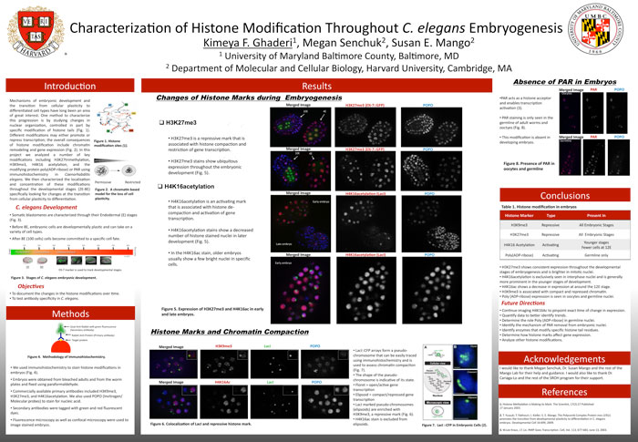

News Archives : 2010 : Undergraduate Intern Learns in Susan Mango's MCB Lab
by Cathryn Delude
August 3, 2010
In a story entitled "Learning in the Labs," the July 22, 2010 Harvard Gazette featured an undergraduate summer research intern, Kimeya Ghaderi, working in Susan Mango’s Molecular and Cellular Biology laboratory on how cells form the gastrointestinal track. Ghaderi is one of more than 300 undergraduate students that Harvard University seeks out in an effort to diversify the community of future graduate students, researchers and eventually faculty. These students hail from universities and colleges from across the United States and the territories, many from underrepresented communities. MCB has been a prominent supporter of the Summer Research Opportunities at Harvard Program and featured this program last summer on its website.
Ghaderi is a rising junior majoring in biochemistry at the University of Maryland, Baltimore. "Kimi works directly with Megan Senchuk, a graduate student in the lab, and is overseen by Dr. Mango,” said Steve Von Stetina, a postdoc in the lab who “also had the pleasure of mentoring Kimi for a week while Susan and Megan were both out of town." Ghaderi also worked with Dave Smith, a microscopist in the new Harvard Center for Biological Imaging, to learn confocal microscopy, which she is using to look at modifications of histones, the proteins that package DNA, in the worm C. elegans.
She is amazed to be using the cutting edge technologies she had only recently read about in textbooks, and also to be able to chose the direction of her research project. “Before, I was always told what to do at every step, but here I was given a choice of which histone modifications I could look at. So if I saw that one modification wasn’t working, I could follow another, and the other lab members would help with ideas for what to do next or why the experiment wasn’t working. In the end, I’ve been able to see an appreciable change from one of the modifications in the worm embryos over time. So this program has shown me that research is really very exciting."
Dr. Mango welcomed the opportunity to host Ghaderi this summer. She recalls her first lab experience, through an ACS scholarship in high school. “It was completely different from what I expected, and a lot more fun. I thought it would be serious-looking scientists in white lab coats, no talking, no laughing. Instead, I was delighted to find a community of lively, fun people. It changed my perception of scientists.”
Read more in HARVARDgazette.
